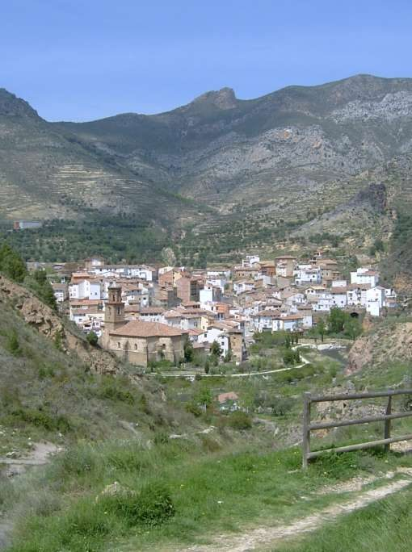
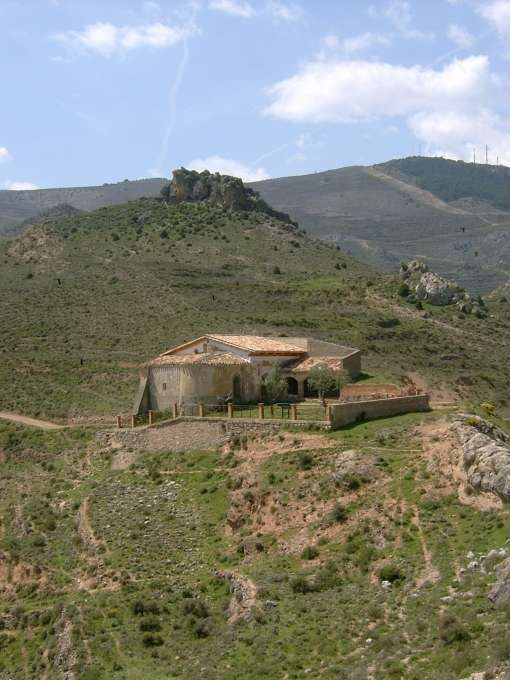

Ermita de Peñalba
Arnedillo · comarca del Cidacos
- Distancia2,8 kmida y vuelta
- Desnivel175 m
- Tiempo orientativo1 h
- Dificultadbaja
- Época recomendadatodo el año
- Terrenocamino y senda
Volvemos a visitar la zona menos húmeda de La Rioja. Como contraste, la naturaleza ha dotado al entorno de Arnedillo con surgencias de aguas termales y unos escarpados riscos donde anidan numerosas colonias de buitres. Si cuando acudimos a Arnedillo nos limitamos a atravesarlo por carretera o simplemente a visitar su balneario nos estaremos perdiendo la perspectiva más coqueta de esta población.
El paseo que os propongo va en busca de esta hermosa vista de Arnedillo, con su iglesia y el paseo junto al río Cidacos. La ermita que vamos a visitar, la de Peñalba, también responde con generosidad a su mágico topónimo, y es que no recuerdo ninguna ermita o montaña llamada Peñalba que no se haya ganado con su ubicación su precioso nombre.
{kind=link}

{kind=link}

Recorrido
Llegando al Arnedillo por la carretera de Arnedo, sin llegar a entrar en su casco urbano, nos encontramos con un amplio aparcamiento a la derecha; lugar desde el que podemos comenzar nuestro paseo. Al otro lado del río nos espera un camino cementado que pasa junto al cementerio y a la ermita de San Andrés. El cemento se acaba y continuamos por un bonito sendero que nos va introduciendo poco a poco en un árido barranco.
Al llegar bajo una línea eléctrica, en una confluencia de barrancos, seguiremos la dirección marcada por la línea eléctrica, por un sendero con mayor pendiente. Por el camino nos encontraremos una nueva ermita y una antigua nevera (muy didáctica). El ascenso culmina en un collado, precisamente donde está asentada la ermita de Peñalba. Retornaremos a Arnedillo por el mismo camino, pero seguramente que el recorrido nos parecerá muy distinto; ¿o no?